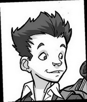
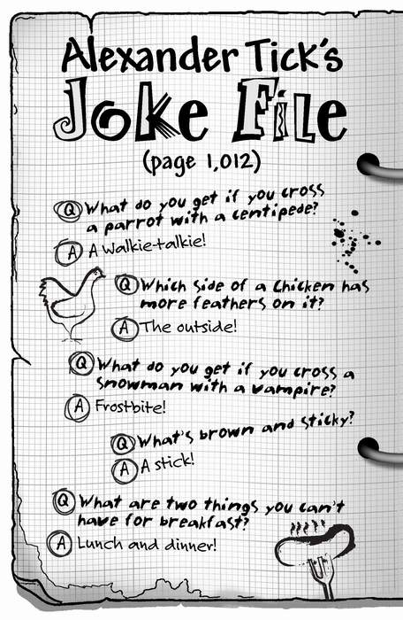
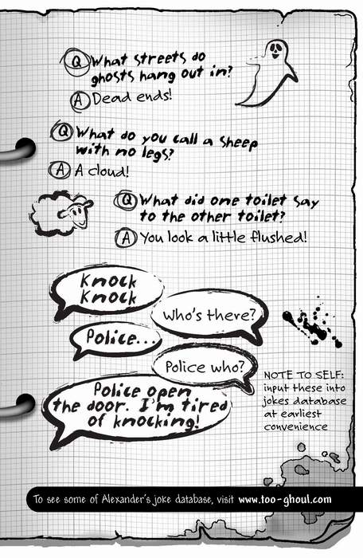

SURNAME: Simpson
FIRST NAME: James
AGE: 11
HEIGHT: 1.6 metres
EYES: Hazel
HAIR: Mousy brown and scruffy
LIKES: Gaming, skateboarding, sports, Stacey (although he’d die rather than admit it)
DISLIKES: Homework, sitting still for any length of time, wearing his school tie
SPECIAL SKILL: Getting sent to Mr Tick’s office; persuading Lenny and Alexander to investigate the spooky goings-on at St Sebastian’s
INTERESTING FACT: James joined St Sebastian’s later than the other year sevens. This was because his family relocated to Grimesford a term in to the new school year when his dad moved job
For more facts on James Simpson, go to www.too-ghoul.com
Answer these questions to find out
…you could be in danger!
1 Which of these best describes your toilet?
a) Clean, pristine and shiny
b) A few skid marks, wonky seat, a bit whiffy
c) Covered in black gunge and acidic green goo
2 What noise does your loo make when you flush it?
a) A splashing, watery noise
b) A clunk and a gurgle
c) A deafening, spine-chilling roar
3 How does your toilet smell?
a) It smells of flowers and perfume
b) A bit stinky after Dad’s used it, but OK
c) So bad that the paint has been stripped off the door
4 When you sit on your loo, what can you feel?
a) The cold seat, and that’s about it
b) The loo-roll holder pressing against your arm
c) Something slimy curling round your leg
5 Have any of the following ever gone missing down your loo?
a) Your baseball hat when it fell down there
b) A marble that dropped out of your pocket
c) Several of your friends
6 How can you tell if someone else is using your loo?
a) There’s an ‘engaged’ sign on the door
b) You can hear your dad singing while he’s sitting on it
c) The whole house shakes and you can hear a terrible screaming noise
How did you score?
Mostly As : You have a lovely, safe toilet. You should visit it more often.
Mostly Bs : You have a normal loo, but beware of any changes…
Mostly Cs : You’d better not be reading this on the toilet. IT’S HAUNTED!
FOR MORE QUIZZES, VISIT www.too-ghoul.com


Learn to speak rodent in one easy lesson!
Squeak: Hello
Squeak: Goodbye
Nibble: Please feed me
Nibble, nibble: I’m bored with this maths lesson now
Squeak, squeeeeak: I really don’t want any make-up on, thanks
Nibble, nibble, squeak: Actually, I don’t mind if you put it on me, Stacey. Do you want to go to the cinema sometime? I’m considered quite handsome in the rat world, you know
Squeak, squeeeeak, nibble, squeak: I don’t think you should blame us rats for the Black Death. It was all those pesky fleas’ fault
Nibble, squeak, nibble: There’s no way I’m going down that toilet. Even rats have standards!
Squeaksqueaksqueaksqueak!: What am I doing down in this pit? I think I prefer my cage
Squeeeeeeeeeeeeeeeeak!: Help! I’m falling out of the sky in a cloud of ghosts!